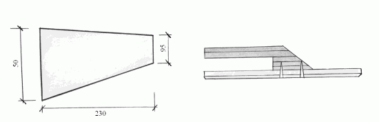

Жидкие обои.

В 1997 г. на российском рынке появились новые материалы для отделки, которые по способу нанесения на поверхность стали называть жидкими обоями. Обычные рядовые граждане недоумевают по поводу того, почему данное покрытие относится к обоям, ведь по фактуре оно, хоть и отдаленно, напоминает покрытие из декоративно-штукатурных растворов.
Жидкие обои применяют для отделки не только стен, но и потолков жилых помещений с пониженной влажностью воздуха; как правило, это спальня, гостиная, прихожая и коридор.
Жидкие обои изготовлены из натурального сырья – хлопка или шелка, связующих материалов и некоторых специфических наполнителей. Простота нанесения и долговечность использования сразу же привлекли к этим обоям внимание покупателей. Те же, кто воспользовался новинкой одними из первых, были приятно удивлены, открыв и другие несомненные достоинства этого покрытия:
– по желанию хозяев квартиры обои можно использовать повторно для отделки потолка другого помещения не менее четырех раз;
– при нанесении жидких обоев не требуется исправления небольших дефектов поверхности: благодаря оригинальной фактуре жидкие обои сами могут замаскировать отдельные неровности при условии, конечно, если они не очень велики;
– наносить обои можно как вручную, так и с помощью пульверизатора (последний способ все же используется гораздо реже);
– жидкие обои пожаробезопасны, не притягивают к себе пыль и не создают ее;
– они отлично сочетаются с другими материалами;
– устойчивы к загрязнению, переносят влажную уборку;
– с течением времени не выцветают;
– отделка без стыков, без швов, выполняется в едином стиле;
– все вещества в их составе абсолютно безвредны для человека;
– покрытие довольно долговечно – не менее 10 лет с момента нанесения.
Техника нанесения обоев на потолок настолько проста, что ею может овладеть практически каждый. Прежде всего, как и при любой другой отделке, поверхность следует тщательно подготовить. Первый ваш шаг – удаление старых обоев, краски на клеевой основе и других покрытий. Если же потолок был ранее окрашен масляными или водно-дисперсионными составами, то на эти составы жидкие обои наносить можно.
Прежде всего поверхность потолка нуждается в грунтовании. В том случае, если потолок был ранее окрашен масляной краской яркого, сочного цвета, он может быть заметен и через жидкие обои, если использовать обычную грунтовку. Для этой цели понадобятся специальные водонепроницаемые составы, а само грунтование лучше провести в два слоя.
Пластиковые или пластиковидные покрытия огрунтовывают водно-дисперсионной краской на основе клея ПВА, различные металлические детали – масляной краской или эмалью.
Огрунтованную поверхность следует оставить для высыхания. Разводят сухую смесь и пигмент нужного вам оттенка в пластмассовой емкости, постепенно, небольшими порциями добавляя теплую (25 °C) воду до консистенции густой сметаны. Не забывают тщательно перемешивать массу! Во время перемешивания сразу же удаляют крупные частицы материала. Затем оставляют получившуюся смесь на 20 минут для набухания и перед нанесением снова тщательно перемешивают. Структура жидких обоев такова, что готовое покрытие имеет один основной цвет (например, темно-зеленый) и два второстепенных – вкрапления белого и серого цветов. Если же нужно добиться однородности оттенка, без всяких вкраплений, готовят раствор одновременно из нескольких упаковок.
Жидкие обои высыпают в емкость 12 л и держат в воде не менее 1,5–2 часов. Кстати сказать, в аннотации говорится о том, что замачивание происходит в течение 15 минут. Данное время указано неверно – за 15 минут обои не успеют достигнуть нужной консистенции.
Чтобы придать интерьеру неповторимый вид, можно ввести в приготовленную смесь различные декоративные добавки.
Не стоит бояться развести большее количество материала, чем будет использовано: если закрыть пластмассовую емкость крышкой, разведенные обои могут храниться очень долго, несколько месяцев или даже более. А вот еще один вариант: хранение остатков разведенного материала в полиэтиленовом пакете.
Жидкие обои можно наносить на потолок с помощью:
– пластиковой терки;
– пульверизатора;
– малярного валика;
– кельмы из оргстекла (рис. 10).

Рис. 10. Кельма из оргстекла.
При отстутствии кельмы ее легко приготовить в домашних условиях. Для этого потребуется кусок оргстекла. Вырезают из него треугольник 5–6 см и привинчивают ручку.
Таким образом, жидкие обои наносят на потолок либо вручную (теркой, валиком, кельмой), либо механизированным способом (с помощью пульверизатора). В первом случае происходит набрасывание раствора на потолок и затем разравнивание его валиком или теркой. Малярный валик должен быть с жесткой шубой. С помощью рельефных валиков можно осуществить фактурную отделку. Накатывание рисунка следует производить через 4–7 часов после того, как обои были нанесены на потолок. Не забывают постоянно смачивать валики водой.
При распылении пульверизатором вам потребуется компрессор с рабочим давлением 0,4–0,5 МПа и производительностью не менее 400 л/мин, сечение сопла подбирают в зависимости от фактуры покрытия – от 5 до 10 мм. Можно регулировать поток при распылении изменением количества воды, добавляемой в материал.
Если решено облегчить свою задачу и воспользоваться пульверизатором, прежде всего следует нанести небольшой слой, покрывающий потолок всплошную. Затем, как только поверхность подсохнет, можно наносить окончательный слой уже достаточной густоты. Можно сэкономить на материале и покрыть потолок пульверизатором только один раз, однако при нормальной плотности покрытия в некоторых местах возможно его сползание в процессе набрызга.
Жидкие обои могут значительно сократить материальные и физические затраты, поскольку, применяя это покрытие, можно обойтись и без штукатурных работ. Для этого поверхность потолка покрывается в два этапа. Сначала жидкими обоями следует зашпатлевать швы, например в листах гипсокартона, кирпичной кладки и пр. Затем, дождавшись, когда поверхность высохнет, наносят второй декоративный слой.
Если наносят обои в достаточно прохладной комнате (при температуре менее 10 °C), лучше всего сразу внести в комнату нагревательный прибор типа калорифера. Кстати, можно его оставить там же для того, чтобы ускорить процесс высыхания. Для этой же цели можно устроить в комнате сквозняк или установить вентилятор – словом, любые средства, которые так не «любят» обычные обои. А вообще, время высыхания покрытия в комнате с температурой около 21 °C – 2–3 часа.
В зависимости от того, в каком состоянии находятся потолки, 1 кг сухой смеси можно покрыть до 3 м2площади.
При проведении небольшого ремонта в квартире поврежденные места покрытия следует обильно смочить водой, удалить, после чего нанести свежеприготовленный слой. Если проводят только легкий косметический ремонт, можно только немного освежить покрытие с помощью любой водно-дисперсионной краски и красящего наполнителя.
При желании можно перенести обои в другое помещение. Для этого покрытие следует обильно смочить водой, аккуратно снять шпателем, уложить в пластмассовую емкость, размочить в воде и нанести на другую поверхность. А можно оставить на несколько месяцев в сухом виде: добавив другие пигменты, обои можно использовать вторично.